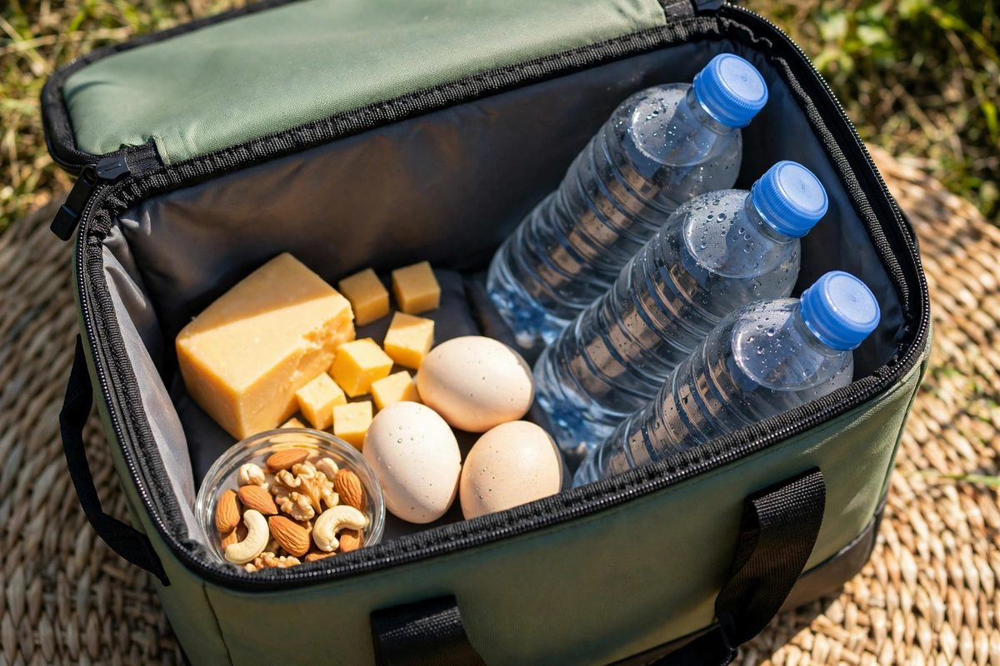

Home › Guides
Low-Carb Travel Tips: Eating Well on the Road

Travel is one of the hardest times to stay low-carb. You are in unfamiliar places, you are hungry at odd hours, and the easiest food is usually bread, pasta, or a pastry. But with a little preparation, travel can be easy. Pack snacks, know what to order, and accept that a few imperfect meals are not a disaster.
Pack snacks
Pack low-carb snacks before you travel: nuts, cheese, hard-boiled eggs, and beef jerky all travel well. A small bag of nuts and a bottle of water in your bag can save you from a pastry at the airport.
If you are flying, check the rules on liquids and food, but solid snacks are usually fine. Pack more than you think you need, because delays happen and hunger makes bad decisions.
Airports and stations
Airports and stations are full of high-carb food, but most now have a salad bar, a grill, or a cafe that sells eggs. Choose a salad with chicken, a bunless burger, or eggs, and skip the bread and fries.
Avoid the bakery and the sandwich shop if you can. If you must eat there, choose a salad or a soup, and drink water instead of a soft drink. A black coffee is a better choice than a sweetened latte.
Hotels and breakfasts
Hotel breakfasts are often a buffet, which is good news: you can choose eggs, cheese, yoghurt, and fruit, and skip the bread, cereal, and pastries. Ask for eggs cooked to order if they are not on the buffet.
If your hotel room has a fridge, stock it with cheese, yoghurt, and vegetables from a local shop. A small shop nearby is better than the hotel minibar, which is expensive and full of high-carb snacks.
Eating out abroad
In most countries, a grilled meat or fish with vegetables is available. Learn a few phrases in the local language, such as no bread, no rice, and extra vegetables, or write them on a card.
Accept that some meals will be higher in carbs than usual. A single meal does not ruin a diet. Enjoy the local food, choose the best option available, and return to your normal pattern when you get home. Travel is a time to be flexible, not perfect.
A low-carb packing list
A packing list makes travel easier. Pack nuts, cheese, hard-boiled eggs, and beef jerky, in small bags that fit in your hand luggage. Pack a water bottle, and fill it after security. Pack a small bag of salt, in case you need it, and a few tea bags or coffee sachets.
Keep the snacks in your bag, not in your suitcase, so they are always within reach. Check the rules on food at your destination, especially for international travel. A packed bag of snacks is a small effort that saves a lot of bad decisions.
If you are staying with family or friends, tell them in advance that you eat low-carb, and offer to cook a meal for everyone. A roast chicken with vegetables is a meal anyone can enjoy, and it shows that low-carb eating is normal food, not a special diet. Bring a dish to share at gatherings, so there is always something you can eat, and do not make a fuss about it.
Frequently Asked Questions
What snacks should I pack for travel?
Nuts, cheese, hard-boiled eggs and beef jerky travel well. Pack more than you need, and carry water.
What should I eat at the airport?
A salad with chicken, a bunless burger, or eggs. Avoid bakeries and sandwich shops if you can.
How do I stay low-carb abroad?
Order grilled meat or fish with vegetables, learn a few local phrases, and accept that some meals will be imperfect.